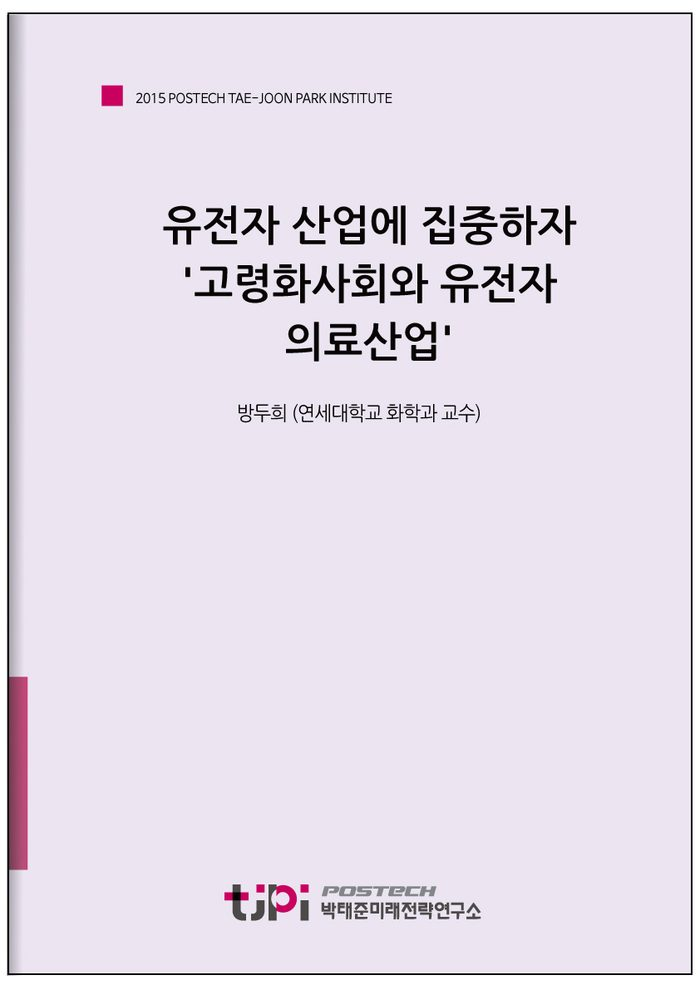

저자 방두희 (연세대학교 화학과 교수)보도일 2015-10-19

요 약
한국사회가 당면할 중요한 이슈 중의 하나로 현재 급속도로 진행되는 인구의 고령화 현상을 꼽고자 한다. 고령화에 수반되는 한국사회의 경제, 정치, 산업적 지형의 변화는 앞으로 10년 후 다양한 이슈들을 만들어낼 것이다. 이 글에서는 고령화사회에 대처하기 위한 생명산업 분야의 대응 방안에 그 논의의 초점을 맞추고자 한다. 유전자 산업이란 무엇인가? 유전자 산업은 두 가지 기반 기술의 발전에 의해 이루어졌다.
첫 번째 기술이 유전 정보를 읽어내는 기술(DNA sequencing)이다. 두 번째 기반 기술은 유전자 정보를 쓰는 기술이다.
왜 유전자 산업이 고령화되어가는 향후 10년의 한국사회를 대비하기 위한 방안인가? 지난 10년간 유전자를 읽고 쓰는 기술은 반도체 집적도의 증가보다 빠른 속도로 발전되어 왔다. 유전자 산업에 대한 집중은 현재 진행되고 있는 고령화 한국사회의 향후 10년을 대처하기 위한 초석이 될 것이라 믿어 의심치 않는다.
----------------------------------------------------------------
박태준미래전략연구소는 2015년 미래전략 연구 대상으로 선정한 ‘10년 내 한국사회가 당면할 가장 중요한 이슈는 무엇이며, 어떻게 대응해야 하는가?’라는 주제에 대해 다양한 분야에서 업적을 이룬 전문 지식인들의 생각을 들어보았습니다.
< 전문가 36인의 에세이를 엮어 '10년 후 한국사회'라는 책으로 발간되었습니다. 도서보기 >
목 차
방두희
연세대학교 화학과 교수
시카고대학교 박사(화학), 하버드대 의과대학 박사후 연구원(유전학). 2015년 Scientific Reports (Nature publishing group), Editorial Member, 2013년 한국공학한림원 선정: 2020년을 이끌어갈 100대 기술의 주역, 2010년 포스코청암 Junior교수 펠로. 현재 연세대학교 화학과 부교수.
내 용
[2015 전문가 에세이] 유전자 산업에 집중하자 '고령화사회와 유전자 의료산업'
방두희 (연세대학교 화학과 교수)